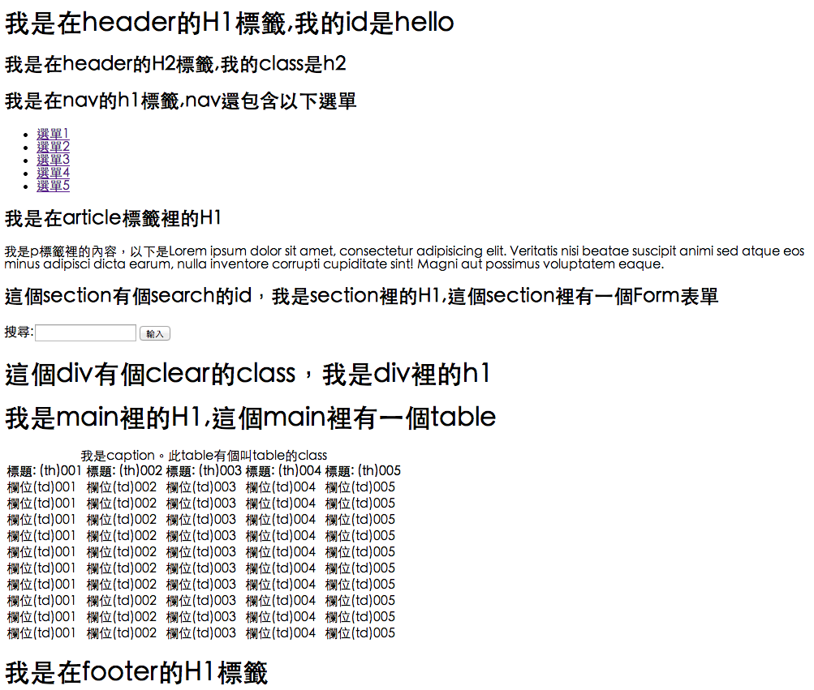

台中前端社群
Taichung Frontend Group
TALK #5
社團核心團隊與助教介紹
- Chuyi Huang
- Cash Wu
- Vincent Chen
- Flora Hsu
前往前端工程師の路
用文字編輯器與瀏覽器來打造前端工程
今日流程
- Why 文字編輯器 + Chrome? (10 mins)
- Sublimt Text 2/3 + Emmet 介紹與安裝 (15 mins)
- 使用Emmet打造HTML與實作 (50 mins)
- Recess & Ice Break Time (30 mins)
- 使用Emmet打造CSS與實作 (40 mins)
- Devtools介紹與Console操作 (30 mins)
Why 文字編輯器 + Chrome?
- 以前的美工，現在的美術設計與前端工程師
- 使用DW的問題？
- 文字編輯器的優缺點
- Chrome的開發者工具非常強大
前端工程師
- 角色定位更清楚
- HTML/CSS/JS是有層次的
- GUI界面是前端工程師的天花板
- 想成為前端工程師必須與程式碼為伍
- 新工具與技術往往沒有GUI界面
- 擺脫GUI的束縛，工具使用更得心應手
DreamWeaver V.S 文字編輯器
- DW很好很強大，拖拉很簡單，操作很自動
- 做為編輯器，DW是沒有問題的
- 文字編輯器，需要背很多語法與指令
- 透過編輯器全面掌握HTML/JS/CSS
- 只有經歷過才能"體會"語法的用途
Why Emmet
- 適合敏捷開發
- 語法簡單，能立即上手
- 同時支援HTML與CSS
- 支援各大編輯器
- 強化CSS選擇器的觀念
安裝Sublime Text與Emmet (10 mins)
Emmet DEMO(HTML)
- 介紹符號，參考Emmet Doc
- 建立簡單網站
- header>h1.titile{Emmet的快速實驗}+h2{基本的語法介紹}^nav>ul#menu>li.more.than.one.klass{方法$$}*5^section>(h1{搜尋}+form[action=/serach]>input:t+input:b[value="搜尋"])^section>(h1{主要內容}+table>(thead>tr>th{欄位$$}*5)(tbody>tr*4>td{資料$$}*5))^footer>section>h1{I am Footer}+a[href=http://docs.emmet.io/cheat-sheet/]{emmet的說明文件}
Emmet語法簡介
- 標籤
- ID與Class
- 屬性
- 內容
- 下一層/回上層/群組
- 重複與自動數字填充
任務:用Emmet完成以下頁面
請依照圖片說明

用Emmet實作HTML部份
請開始動作做(50 mins)。
參考:
http://frontend.inow.tw/emmet_devtools/html_exercise.html
自我介紹 (15 mins)
- 我的名字是...
- 我的工作是...
- 為何想學習網頁前端...
Emmet語法簡介(CSS)
- 記住css屬性的簡寫: bdrs, bxz, fr/fl
- 數字與單位
- css3的部份多使用
- 隨時參考Emmet的cheatsheet
- 練習再練習
Chrome DevTools
- 選取與編輯HTML區塊與內容
- 改變CSS的樣式與查看Box Model
- 觀看網路連線與資源
- 使用主控臺(console)管理javascript
- 可以安裝外掛強化DevTools
Chrome DevTools操作
- Windows系統: F12 / Ctrl + Shift + I
- Mac系統: Cmd + Opt + I
使用Devtools(DEMO)
- HTML編輯 - 改掉title
- CSS編輯 - 改變Header>H1顏色
- Console操作 - alert
練習使用Devtools (20 mins)
- 修改所有H1的內容
- 移除table thead標籤
- 將背景改成淺藍色
- 在console裡用alert的方式顯示網址列的內容